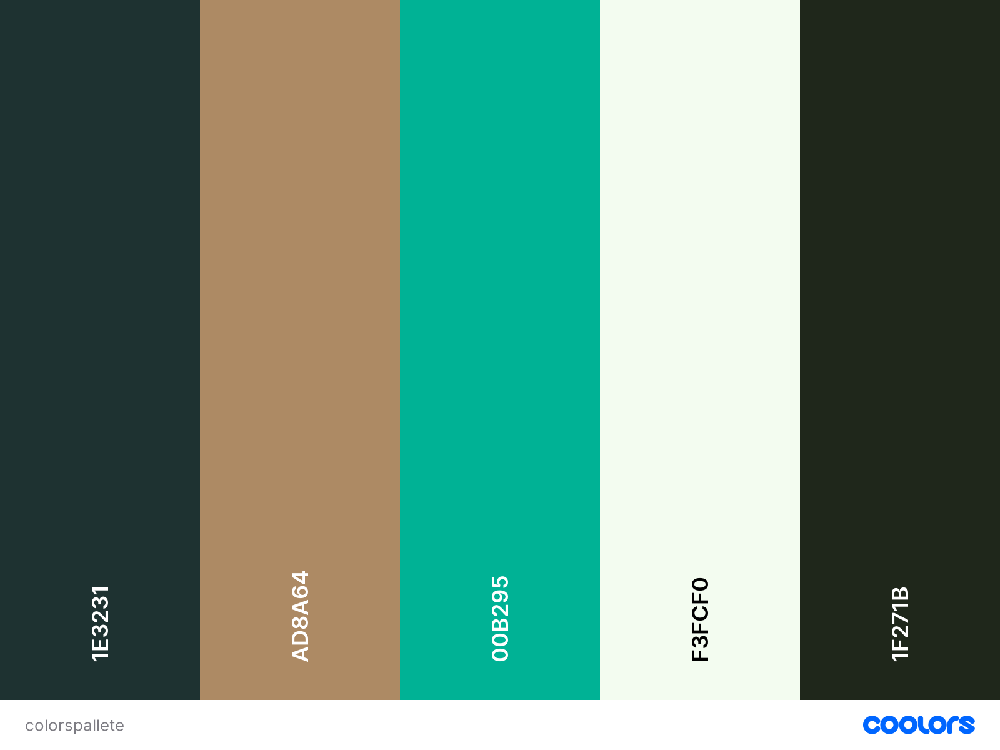

Site Name: Vicente Lopez Chamber of Commerce
This name represents a city in which the chamber operates.
Site Purpose
The site is aimed at all those business professionals, people who are currently involved in business or interested in participating or generating business in the city of Vicente Lopez, Buenos Aires, Argentina.
Scenarios
- What are the new local bussines?
- How to start a good bussines?
- Invest in commerce
- Information about bussines in the area
- Business entrepreneurs in the city
Color Schema
Typography
| Item | Font | Sample |
|---|---|---|
| Site Header | Archivo Black | Sample |
| Content | Lato | Sample |